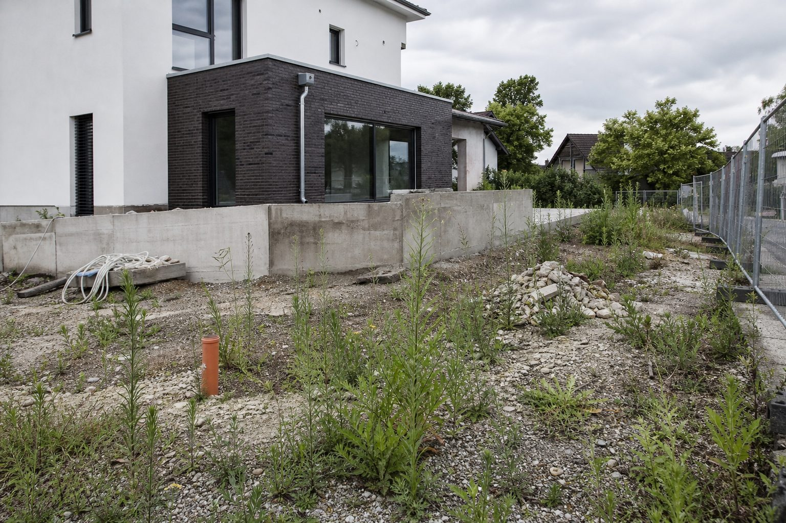

Insolvenzen: Höchster Stand seit 2013 – der Bau liegt 4,5 Prozent über dem Vorjahr
Creditreform zählt für das erste Halbjahr 12.900 Unternehmensinsolvenzen. Der Bau steigt moderater als die Dienstleister, aber von hohem Niveau. Was GaLaBau-Betriebe jetzt für ihre Forderungen tun sollten.

- 12.900 Unternehmensinsolvenzen im ersten Halbjahr 2026 (plus 7,8 Prozent), höchster Stand seit 2013; Bau plus 4,5 Prozent, Dienstleistungen plus 12,6 Prozent.
- Rund 165.000 betroffene Arbeitsplätze und 28,5 Milliarden Euro Schäden; Creditreform erwartet eine Stabilisierung frühestens 2027.
- Für Betriebe: Abschlagsrechnungen, Bonitätsprüfung und Bauhandwerkersicherung nach § 650f BGB – die Außenanlage ist das letzte Gewerk und die letzte offene Rechnung.
Die Zahl der Unternehmensinsolvenzen in Deutschland ist im ersten Halbjahr 2026 auf rund 12.900 gestiegen – 7,8 Prozent mehr als im Vorjahreszeitraum und der höchste Halbjahreswert seit 2013. Das meldet die Wirtschaftsauskunftei Creditreform. Betroffen sind rund 165.000 Arbeitsplätze, nach 143.000 im ersten Halbjahr 2025; die Schadenssumme schätzt Creditreform auf rund 28,5 Milliarden Euro.
Der Bau: Hoch, aber nicht am stärksten
Das Baugewerbe verzeichnet ein Plus von 4,5 Prozent – deutlich weniger als der Dienstleistungssektor, auf den mit rund 7.900 Fällen und einem Anstieg um 12,6 Prozent mehr als 60 Prozent aller Insolvenzen entfallen. Der Handel ist als einziger Bereich rückläufig. Für den Bau ist der moderatere Anstieg allerdings kein Zeichen der Entspannung: Er kommt auf ein Niveau, das seit dem Einbruch des Wohnungsbaus 2023 ohnehin hoch ist. Im GaLaBau hatte der Bundesverband für 2025 bereits 133 Insolvenzen gezählt, nach 101 im Jahr davor.
Creditreform-Analyst Patrik-Ludwig Hantzsch spricht von einer tiefen strukturellen Krise, verschärft durch die Konflikte im Nahen Osten und Energiepreisschocks. Eine Stabilisierung erwartet das Institut frühestens 2027, abhängig von der wirtschaftlichen Erholung.
Was das für GaLaBau-Betriebe bedeutet
Die eigene Insolvenz ist für die meisten Betriebe der Branche nicht das akute Risiko – die Auftragslage ist stabil, die Erträge sind dünn, aber die Bücher voll. Das Risiko sitzt beim Kunden. Bauträger, Generalunternehmer, Projektentwickler und Gewerbekunden stellen einen wachsenden Anteil der Insolvenzen, und die Außenanlage ist das letzte Gewerk – die Rechnung des Landschaftsbauers ist die, die am Ende offen bleibt.
Wenn der Kunde fällt
Meldet der Auftraggeber Insolvenz an, sind offene Forderungen Insolvenzforderungen – mit Quoten, die im Baubereich meist im einstelligen Prozentbereich liegen. Was noch eingebaut, aber nicht abgenommen ist, gehört dem Insolvenzverwalter; Material, das noch auf dem Hof liegt, gehört dem Betrieb. Wer Eigentumsvorbehalt an geliefertem Material vereinbart hat, kann es unter Umständen zurückholen – das setzt eine Klausel im Vertrag voraus, nicht auf der Rechnung.
Der wichtigste Schutz ist die Reaktionszeit: Zahlungsverzögerungen sind das Frühwarnsignal. Wer beim zweiten Verzug die Arbeit unterbricht und die Sicherheit verlangt, verliert vielleicht den Auftrag. Wer weiterbaut, verliert das Geld.
Der Blick nach vorn
Für die zweite Jahreshälfte rechnet Creditreform mit weiter steigenden Zahlen. GaLaBau-Betriebe mit hohem Anteil an Bauträgergeschäft sollten ihr Portfolio prüfen: Privatkunden, Kommunen und Bestandsgewerbe zahlen langsamer, aber sicherer. Die Mischung entscheidet, ob ein Kundenausfall ein Ärgernis ist oder eine Existenzfrage.
Quellen
- Creditreform: Insolvenzen in Deutschland, 1. Halbjahr 2026, 23. Juni 2026 (12.900 Unternehmensinsolvenzen, +7,8 Prozent; Baugewerbe +4,5 Prozent; Dienstleistungen +12,6 Prozent; Handel −1,3 Prozent; rund 165.000 betroffene Arbeitsplätze; rund 28,5 Milliarden Euro Schäden; rund 38.800 Verbraucherinsolvenzen, +2,3 Prozent) – www.creditreform.de/aktuelles-wissen/pressemeldungen-fachbeitraege/ne...
- BGL: GaLaBau-Branchenstatistik 2025 (133 Insolvenzen nach 101 im Vorjahr) – www.presseportal.de/pm/117960/6225203
- Bürgerliches Gesetzbuch, § 650f Bauhandwerkersicherung; VOB/B § 16 Zahlung – www.gesetze-im-internet.de/bgb/__650f.html
Kommentare
Noch keine Kommentare. Schreiben Sie den ersten.
ifo im August: Weniger Pessimismus am Bau, mehr Stornierungen im Wohnungsbau
Der ifo-Geschäftsklimaindex steigt auf 88,8 Punkte, das Bauhauptgewerbe blickt weniger düster nach vorn. Im Wohnungsbau sinkt der Anteil der Betriebe mit Auftragsmangel – aber jedes achte Unternehmen meldet Stornierungen. Was das für die Außenanlagen bedeutet.
11,11 Milliarden Euro Umsatz, 133 Insolvenzen: Der GaLaBau in Zahlen
Die Branchenstatistik 2025 des BGL zeigt einen Markt, der wächst und gleichzeitig ausdünnt: mehr Umsatz, mehr Beschäftigte – und deutlich mehr Betriebe, die aufgeben mussten.
Stabile Aufträge, getrübte Stimmung: Die Frühjahrsumfrage 2026
Nur noch gut die Hälfte der Betriebe bewertet die Geschäftslage als gut – vor einem Jahr waren es zwei Drittel. Die Auftragsbücher bleiben trotzdem voll. 699 Betriebe haben dem BGL geantwortet.